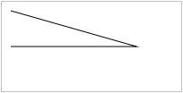
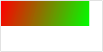

canvas 元素用于在网页上绘制图形
这两种方式在功能上是等同的，任何一种都可以用另一种来模拟
从表面上看，它们很不相同，可是，每一种都有强项和弱点
SVG 绘图很容易编辑，只要从其描述中移除元素就行
向 HTML5 页面添加 canvas 元素
规定元素的 id、宽度和高度canvas 元素本身是没有绘图能力的
所有的绘制工作必须在 JavaScript 内部完成JavaScript 使用 id 来寻找 canvas 元素
然后，创建 context 对象
getContext("2d") 对象是内建的 HTML5 对象，拥有多种绘制路径、矩形、圆形、字符以及添加图像的方法
下面的两行代码绘制一个红色的矩形
fillStyle 方法将其染成红色，fillRect 方法规定了形状、位置和尺寸
通过指定从何处开始，在何处结束，来绘制一条线
通过规定尺寸、颜色和位置，来绘制一个圆

使用您指定的颜色来绘制渐变背景
把一幅图像放置到画布上